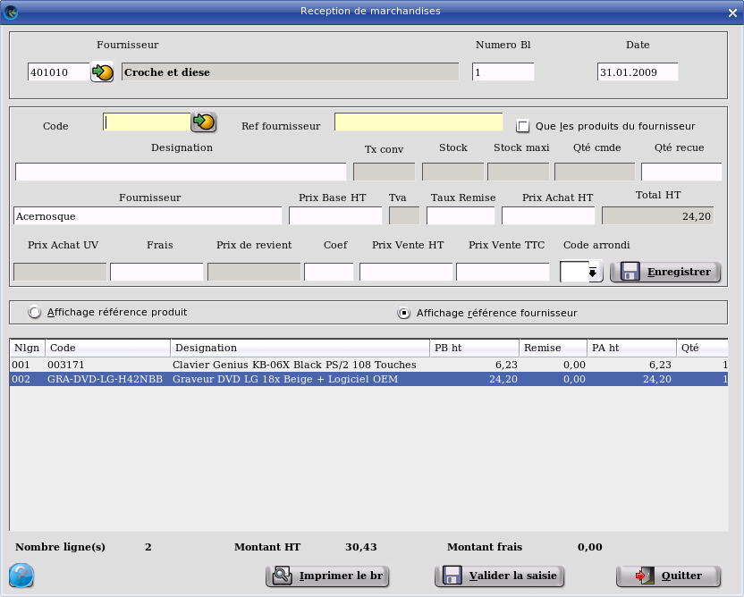

~ Facturation Laurux ~

~ Facturation Laurux ~ |
|
|
|
Receptions manuelles

A partir de cet écran vous pouvez réceptionner vos produits et modifier
ou supprimer un bon de reception précedemment saisi.
Saisir en premier le code du fournisseur
puis le numéro du bon ( Le programme controle que ce numéro ne soit pas
déjà utilisé par le fournisseur saisi ). La date du jour est proposée
par défaut et peut etre modifiable. Il est possible de faire F9 afin de générer un numéro de BR automatique.
Saisir vos produits en tapant leur code
ou bien en les sélectionnant a l'aide du bouton de recherche. Si le
produit n'est pas stocké un message d'alerte non bloquant vous
préviendra, a contrario s'il n'existe pas, un message d'alerte bloquant
vous préviendra. La quantité en stock ( produit stocké ) et la quantité
déjà en commande apparaissent, le curseur se positionne sur la zone
'Quantité recue', saisir puis valider la quantité, le curseur se
positionne sur la zone 'Prix Vente ht'. Si le prix est correct, validez
sinon modifiez le. Le 'Paht' et le 'Total ht' se recalculent et le
curseur vient dans la zone 'Pvht' que vous pourrez modifier.
Lorsque votre saisie est
terminée cliquez ou validez sur le bouton "Enregistrer".
Dans le cas ou le prix a été modifier le
programme vous demandera si vous souhaitez mettre a jour la fiche
article.
Si la gestion du matériel est activée et
si le produit est un matériel, alors une fenêtre s'ouvrira afin de
saisir le ou les numéros de série (selon la quantité recue).Voir rubrique matériels
Votre ligne de saisie
apparait maintenant dans la partie basse de l'écran qui représente le
corps de votre bon de reception. Le nombre de ligne saisies ainsi que
le montant total de votre bon de reception et du montant total des
frais sont également mis à jour lors de la validation du
produit.
En fin de saisie, enregistrez votre
travail en cliquant sur "Valider la
saisie".
En cas d'erreur de saisie, la
modification n'est pas possible après la validation de la réception.
Dans ce cas, il faut faire une nouvelle réception du produit concerné
(en + ou en - selon la modification à faire)
Dès lors que la réception est validée on peut imprimer le BR en cliquant sur le bouton "Imprimer le br". Cette impression va générer un document pdf qui sera copié sous le répertoire ~/BR de l'utilisateur.
Rappel : Pour modifier une ligne,
double-cliquez dessus pour la rendre accessible.
Rappel : Pour supprimer une ligne,
sélectionnez-la avec la souris puis pressez la touche "Suppr".
----------------------------------------------------------------------------------------------------------------------